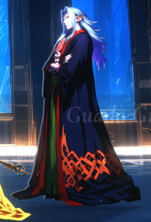
Judge 2: worst 7 (a few loose hair specks, ear-bowl spot, soft fingers; none visible at game size). In-game read 8. No facial veins, as in the concept you picked.
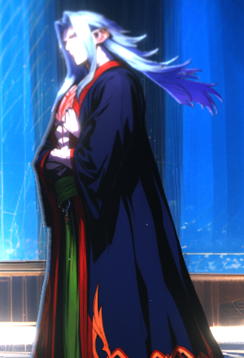
Judge 4: worst 7 (the raised hand: small violet nails, a flat pale palm). Was 5 before the repair. Read 8: hair streaming, open palm. Every spell he casts uses it.
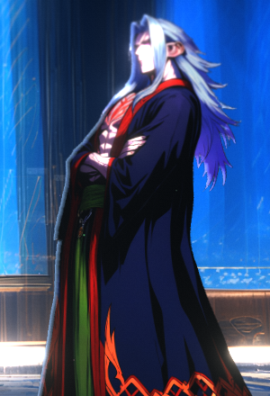
Judge 3: worst 7 (the idle's own edges). The idle's pixels, upper body tilted back 9°. A mild recoil, but it reads better than no hurt painting.
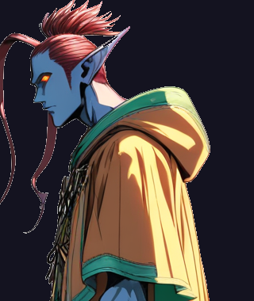
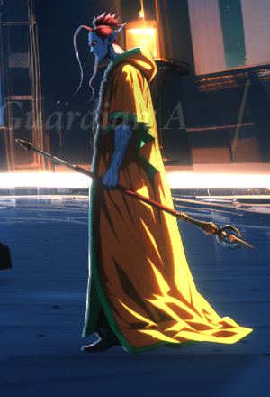
Judge 2: pixels 7, in-game read 6: the bloom makes the pale robe highlights glow. The fix recommended is in the renderer’s bloom, not a repaint, so your pixels stay.
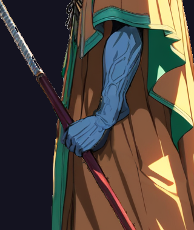
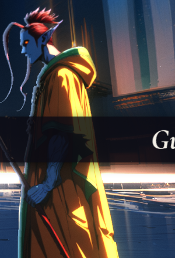
Judge 4: worst 7 (the veins go soft where the wrist was repainted, visible at 2x). Was 6. Spear raised near-vertical. No Guardian hurt painting ships; the engine uses the idle.
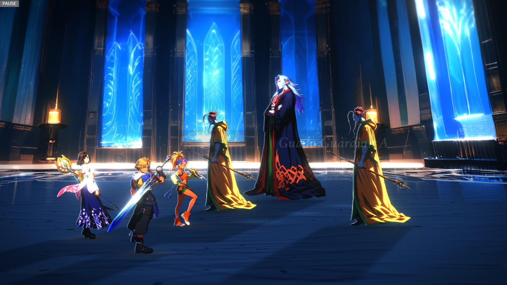
Real frame, idle. Seymour and both Guardians, on the Macalania backdrop
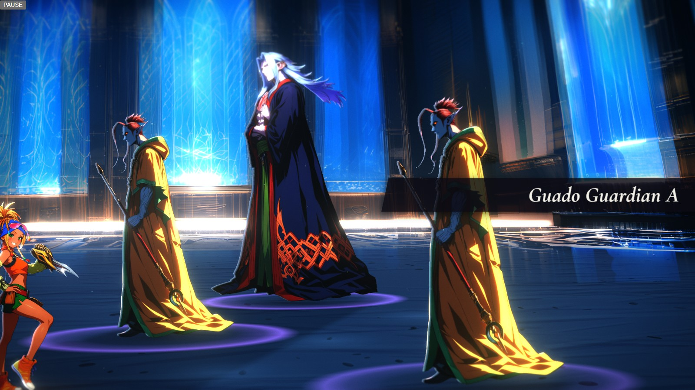
Real frame, every enemy in its cast painting
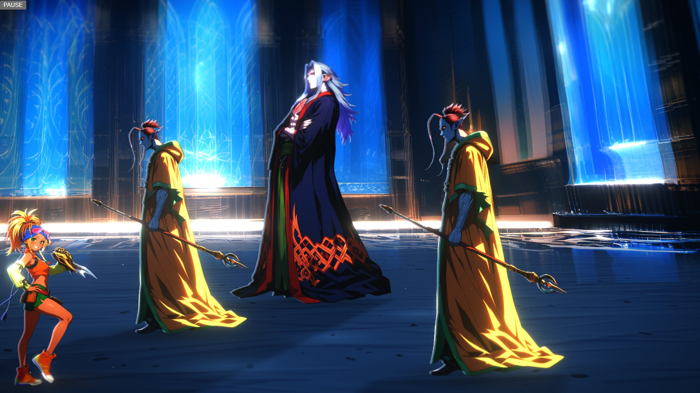
Real frame, Seymour 8 frames into the engine’s flinch
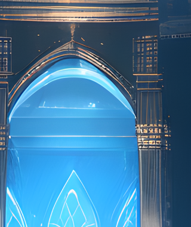
Production judge (09-22): 7, palette. Keeps A’s circular hall, ice arches and braziers. Slightly soft at 1:1; almost none of the warm temple red, which A lacked as well.
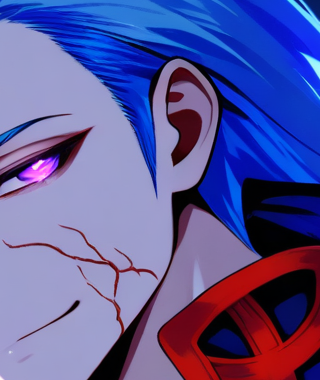
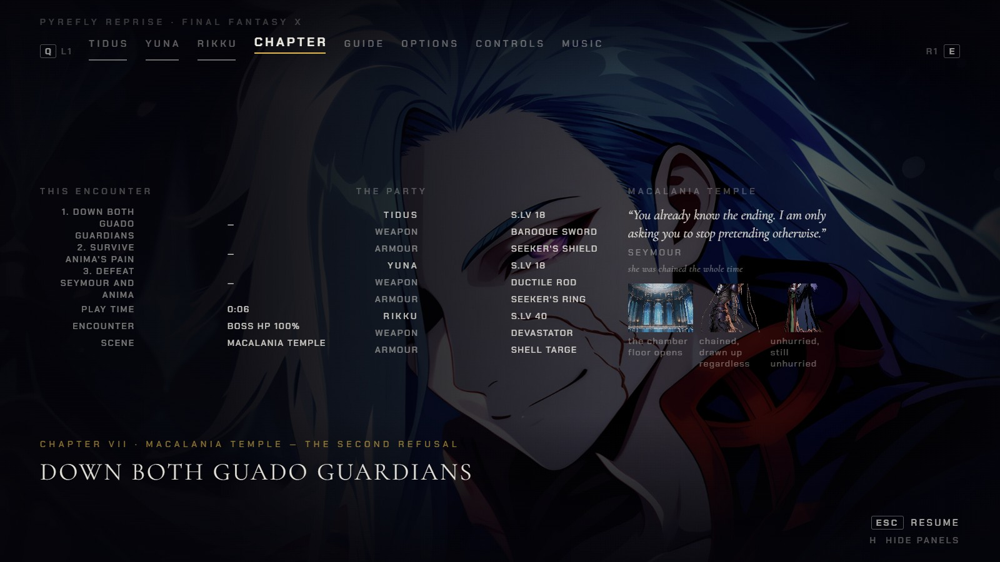
Production judge: 6, scene. A strong face, but the background is a lantern-lit rooftop village, not the temple, and the facial veins read as a cheek scar. The only item here below the bar.
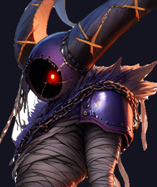
Already approved (D-108: “anima/* is approved”). The same wording covers her Macalania hurt (judged 7) and ko (judged 5, reads as a lean). Name the ko if you want it redone.